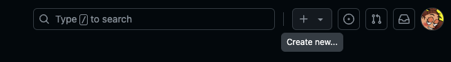

GitHub
GitHub ist eine webbasierte Plattform, die hauptsächlich von Entwicklern und Softwareentwicklungsprojekten genutzt wird, um Code zu hosten, zu verwalten und gemeinsam daran zu arbeiten. Es bietet eine Umgebung, in der Entwickler ihre Programmierprojekte speichern, Versionskontrolle durchführen, Änderungen nachverfolgen, Code überprüfen und zusammenarbeiten können.
Die Vorgehensweise:
Repo erstellen -> Ordner/Projekt erstellen und in VS Code öffnen -> command j = öffnet das terminal
